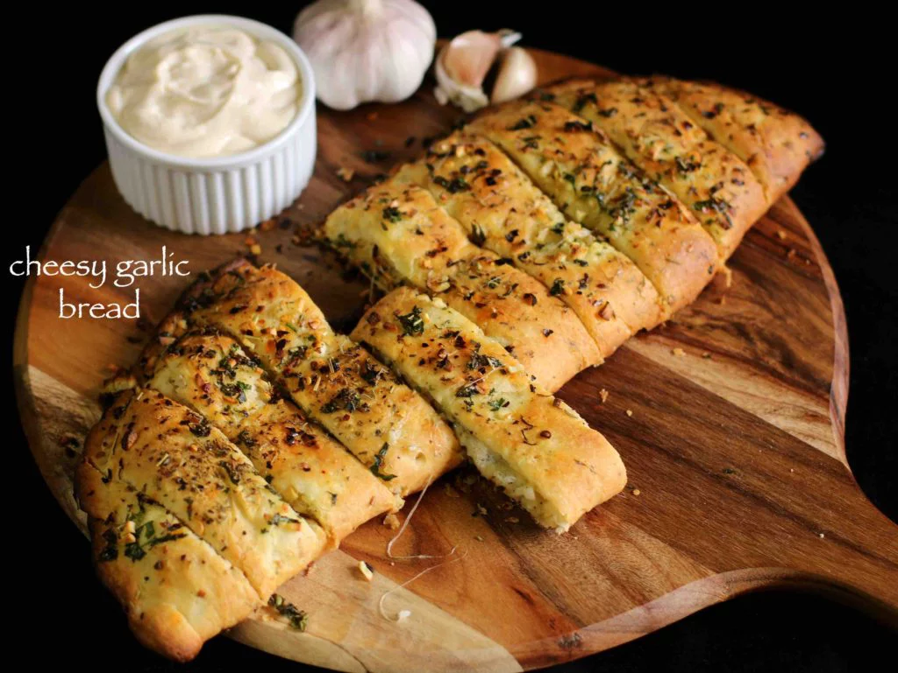

Garlic Bread

Description
A creamy, buttery, and cheesy garlic flavoured bread recipe. It is typically
served as an appetizer or starter before having a full course meal.
Ingredients
Garlic Bread Dough
- 1/4 cup warm milk
- 1 teaspoon dry yeast
- 1 teaspoon sugar
- Pinch of salt
- 3 cloves garlic
- 3/4 teaspoon oregano
- 1 teaspoon unsalted butter
- 1 cup plain flour
- 2 teaspoons oil
Garlic Butter
- 1/4 cup butter
- 3 cloves garlic
- 2 tablespoons coriander leaves
Other
- 3 tablespoons plain flour
- 1/4 cup mozzarella cheese
- 2 teaspoons chili flakes
- 1 teaspoon oregano
- 1 teaspoon mixed herbs
Steps
- Mix warm milk, dry yeast, and sugar together in a large mixing
bowl. Let it rest for five minutes. Add a pinch of salt, garlic,
and oregano. Add butter and flour. Knead the dough, then coat it
with oil and let it rest for two hours.
- Knead the dough once again and mic together butter, garlic, and
coriander leaves in a small mixing bowl. Spread the garlic butter
over the dough generously.
- Top half of the dough with mozzarella cheese. Add seasoning with
chili flakes and oregano.
- Fold the dough and seal the edges. Brush garlic butter on top of
the dough. Then top the dough with chili flakes and mixed herbs.
- Cut the dough slightly into pieces. Bake in preheated oven at 356
Farenheight for 15 minutes.
- Cut into pieces and serve.